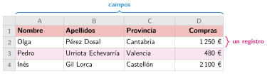
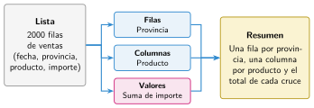

La hoja como base de datos
Criterios: 3f, 3g
🤔 Pienso10 min
Qué hago aquí: Piensa un momento y contesta con lo que ya sabes. No pasa nada si no lo sabes: es para empezar.
Tienes una lista de 2000 clientes de toda España. Tu jefa te pide los de Cantabria con compras de más de 1000 €. ¿Cómo lo harías sin una calculadora?
📖 Leo y aprendo40 min
Qué hago aquí: Lee despacio, mira los dibujos y los ejemplos, y quédate con la idea clave del final.
Una hoja puede guardar una lista de datos como una pequeña base de datos: cada fila es un registro (un cliente) y cada columna es un campo (nombre, provincia, teléfono…). La primera fila lleva los nombres de los campos y no puede haber filas ni columnas vacías en medio.

- Dar formato como tabla (Inicio): la lista toma colores alternos, se amplía sola al añadir filas y pone flechas de filtro en los títulos.
- Filtrar (Datos › Filtro): con la flecha de un campo, se ven solo las filas que cumplen una condición (Provincia = Cantabria; Compras mayor que 1000). Las demás se ocultan, no se borran.
- Validación de datos (Datos): controla lo que se escribe en una celda, por ejemplo una lista desplegable con las formas de pago o solo números entre 0 y 10. Evita errores al introducir datos.
Proteger (Revisar › Proteger hoja): impide cambiar las celdas bloqueadas. Antes, desbloquea las que sí se pueden rellenar (

+

› Proteger). Con contraseña, protege también el libro.
Una tabla dinámica resume una lista larga en pocos números: cuánto ha comprado cada provincia, cuántos coches de cada marca se matricularon cada mes… Se crea con Insertar › Tabla dinámica y se arrastran los campos a sus zonas.

Para introducir datos más rápido sirven otros periféricos: un lector de códigos de barras escribe el código en la celda activa como si fuera un teclado, y con la cámara del móvil puedes pasar una tabla impresa a Excel (Datos desde imagen).
✏️ Hago160 min
Qué hago aquí: Haz las actividades en orden. Empieza siempre por las básicas.
En la lista del dibujo, ¿cuántos registros y cuántos campos hay? ¿Qué filtro pondrías para ver los clientes con compras de más de 1000 €?
Da formato de tabla a la agenda de teléfonos y filtra: los contactos de Santander; los que empiezan por M; y los que no tienen móvil.
En la tabla del casting, filtra a las personas de más de 1,70 m que viven en Cantabria. Ordena el resultado por edad.
Con los coches matriculados, haz una tabla dinámica con las marcas en las filas, los meses en las columnas y la suma de matriculaciones. Añade un gráfico dinámico.
En la hoja de pedidos, pon una lista desplegable para la forma de pago (Contado, Transferencia, Tarjeta) y permite solo cantidades entre 1 y 500. Después, protege la hoja dejando libres solo las celdas para rellenar.
Explica la diferencia entre ordenar, filtrar y hacer una tabla dinámica. Pon un ejemplo de cada uno con una lista de clientes.
🚀 Amplío (si quieres saber más)
Qué hago aquí: ¿Has terminado? Lee la curiosidad o elige el reto. Es voluntario.
Con la hoja de clientes y la de pedidos, haz que cada pedido muestre el nombre del cliente con BUSCARV y una tabla dinámica con el total vendido a cada cliente.
✅ Compruebo10 min
Qué hago aquí: Contesta sin mirar la ficha y marca cómo lo llevas.